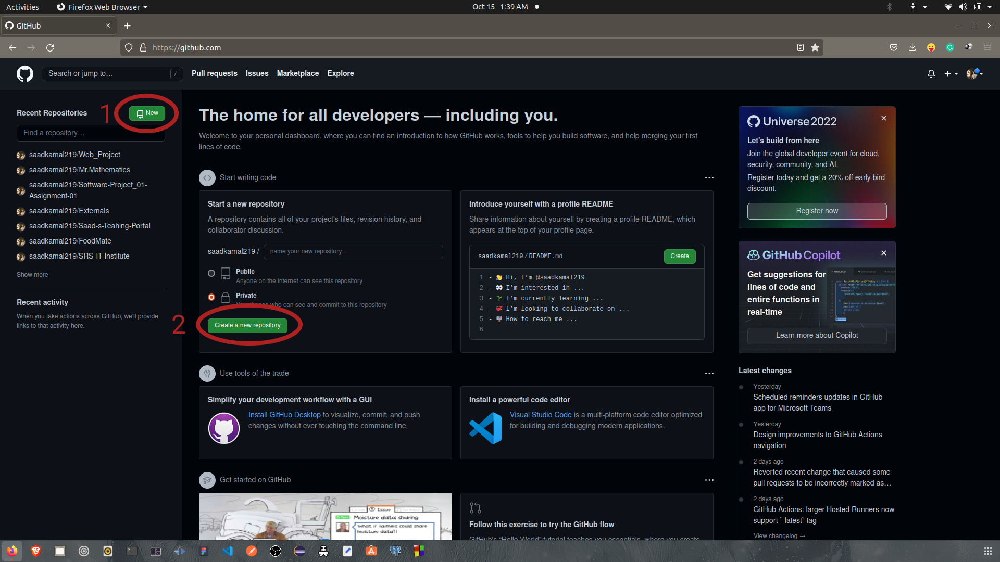
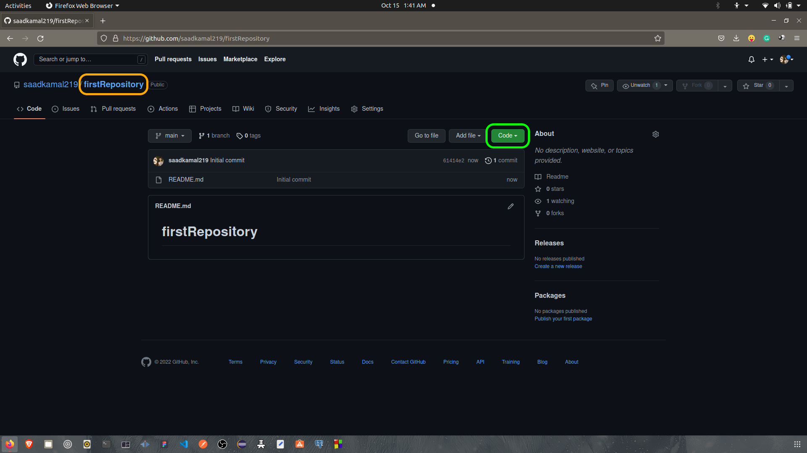
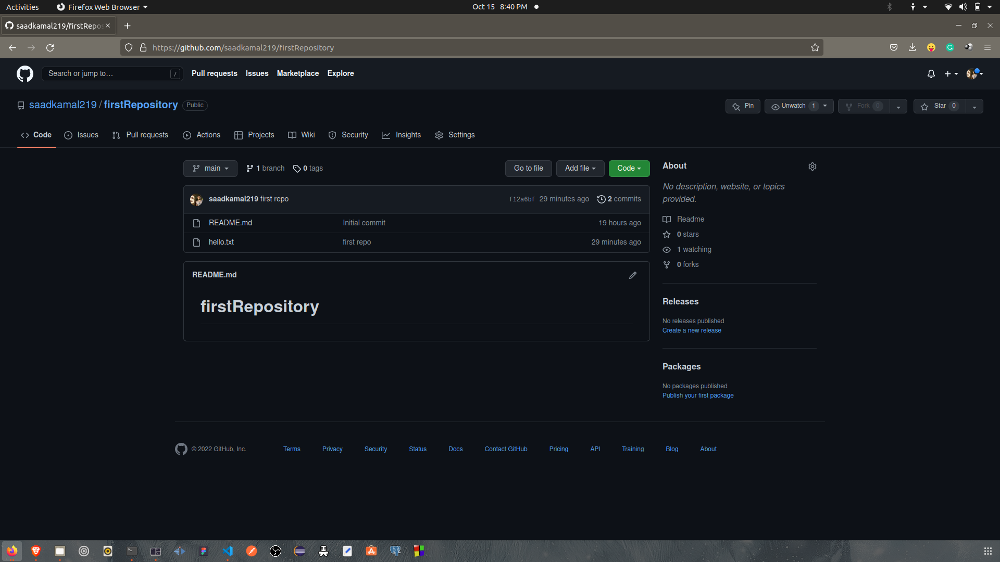
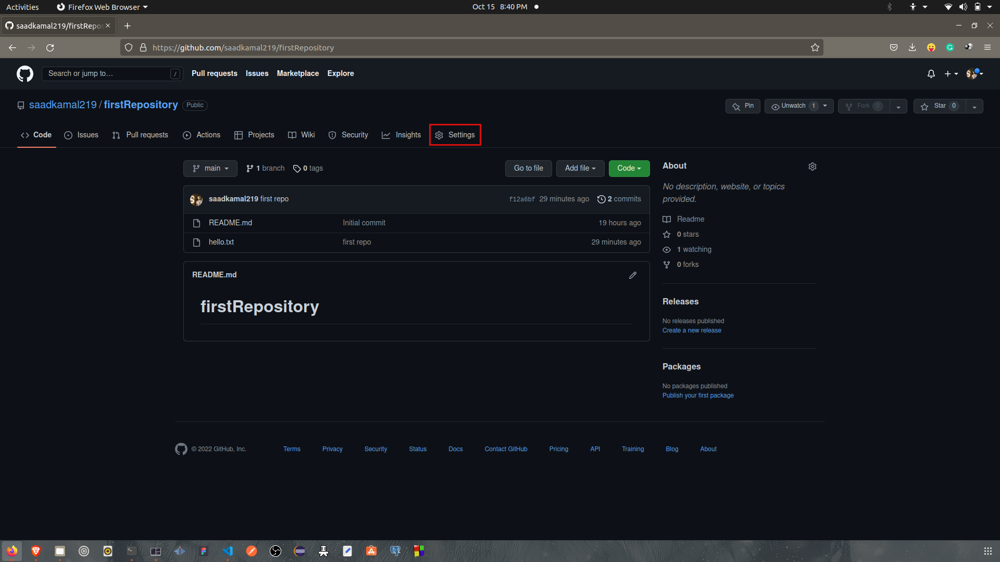
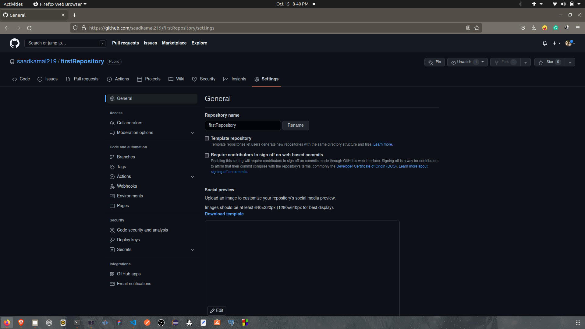
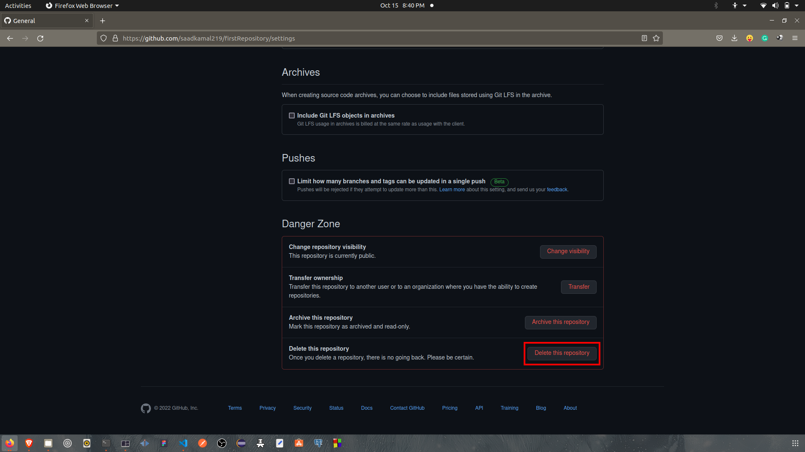
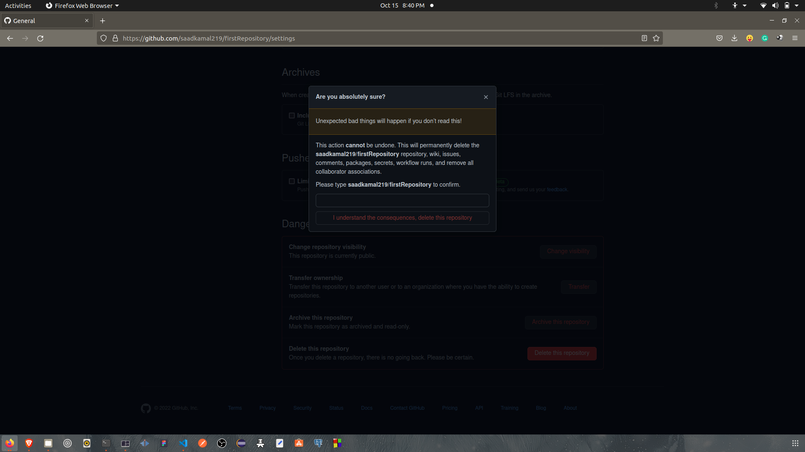
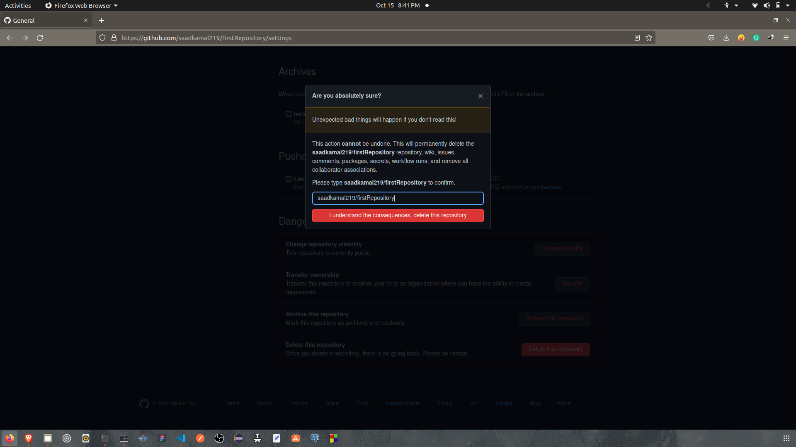

What is git ?
Git is a distributed version control system for tracking changes in source code during software development. Version control system si a manager tool that saves every changes that a developer makes during the development of a software and I f he want to undo any change he can access any previous version if he uses git. So, It is designed for coordinating work among programmers, but it can be used to track changes in any set of files.
Git was originally authored by Linus Torvalds in 2005 for development of the Linux kernel, with other kernel developers contributing to its initial development. Since 2005, Junio Hamano has been the core maintainer.
What is github ?
GitHub is a web-based Git repository hosting service, which offers all of the distributed revision control and source code management (SCM) functionality of Git as well as adding its own features. Github also allows to host a website using a git repository provided by Github Pages.
To use github first of all we have to install git to our device. After installing git, we will mark the file we want to save to github and wuill upload that. Please follow the steps bellow.
Installation setps for git
First, update local package index.
With the update complete, install git.
Confirm the installation by running the following command and matching the output format.
git version 2.25.1
Setting up git
We need to config our information like name and email address. We can manage this process by git config command. We must set our name and email address because git embeds this imformation into each commit. Follow the steps.
Configaration is done. Now we can display the information by following command.
user.name=
user.email=
The information is stored in git configaration file. We can optionally edit by ourselves with a text editor ( nano )
[ user ]
name =
email =
We can exit the text editor by pressing ctrl and x, then y then enter.
Now we have installed git. Now we will learn how to upload a file to github using git.
Uploading a File on github
To upload a file on github, first of all we need to create an account at github. We can create out account using gmail. We have set outr username and password. After finishing the creation of account on github, follow the steps bellow.
This is the home page of github. When we say we will upload a file on github, we actually mean that we will upload a file in a github repository. So, first of all we have to cearte a repository.
We can create a new repository by clicking the first and second
By entering the repository name on the
At step 2, we have to create a README file so that the repository can have a level on it.
By completing the whole process we will create a new repository. Let's asume that the repository name will be firstRepository.
Here the
We have to copy the HTTPS link to clone the repository.
Let's go to the desktop folder of the computer.
cd Desktop
Now we are at the Desktop folder. To clone the repository, we need to initialize git to the folder. We can do the process somewhere else also. We can initialize git by using init command.
Initialized empty Git repository in home/saad/Desktop/.git
.git is a hidden folder. It says that the Dekstop folder is under the monitization of git.If you again initialize git in the same folder, the output will be like:
Reinitialized existing Git repository in /home/saad/Desktop/.git/
Now we have to clone the remote repository to local device using clone command. We have paste the previous HTTPS link after the command.
We can paste the command by pressing ctrl and shift and v int the terminal.
After running the command, we will have a folder in Desktop named firstRepository. Let's enter the folder.
cd firstRepository
Let's create a text file in the folder.
touch hello.txt
Now we will upload it on github. We can check the status of the progress by, status command.
On branch main
Your branch is up to date with 'origin/main'
Untracked files:
(use "git add [ files ] ....." to include in what will be commited)
nothing added to commit but untracked files present ( use "git add" to track )
When we create a repository, by default it is created at main branch. Untracked file means that this file has not been added. So to add a file we can use commands bellow:
When there are multiple files and you want to add al of them at once.
Another command to add all files together.
Suppose there are multiple files and you want to add one particuler file. Follow the command.
To undo the adding process we can run the command bellow.
After adding the file, we have to commit the changes to the branch. We can commit a file using commit command. We can also add some message while commiting.
[ main ] first repo
1 file changed, 0 insertions ( + ), 0 deletions ( - )
create mode 100644 hello.txt
If we check the status
On branch main
Your branch is ahead of 'origin/main' by 1 commit.
( use "git push" to publish your local commits )
nothing to commit, working tree clean
Now we have a confirmation that all our files have been commited and our working path is clean. Now we have to push the file to main branch using push command.
After that it will ask for your username and password. Type those and hit enter button. Your push will be done.
Upload is complete. So, if we check the status now.
On branch main
Your branch is ahead of 'origin/main' by 1 commit.
nothing to commit, working tree clean
Ok, our uploading is successful. Now we need to go the github and reload the page. After realoding, we will be able to see our "hello.txt" file.
Deleting the repository
First of all we have to go the repository we want to delete. Then go to settings.
The settings will open up a page like bellow:
Scroll down to the bottom and you will find the options like bellow:
Click on Delete this repository
To confirm the deletion process you have to type the text given over the text box. Then click the button bellow. The repository will be deleted permanently.
So, we have learned how to install git, how to create a repository, how to upload a file and how to delete the repository. Thank you very much for reading the article. Hope you are benifited by my effort.